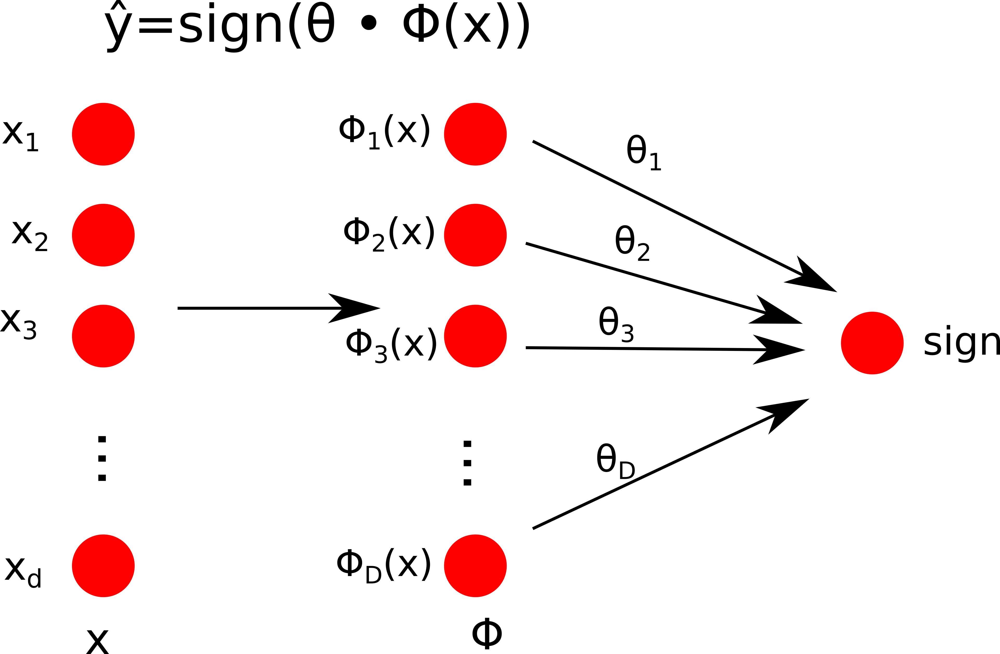
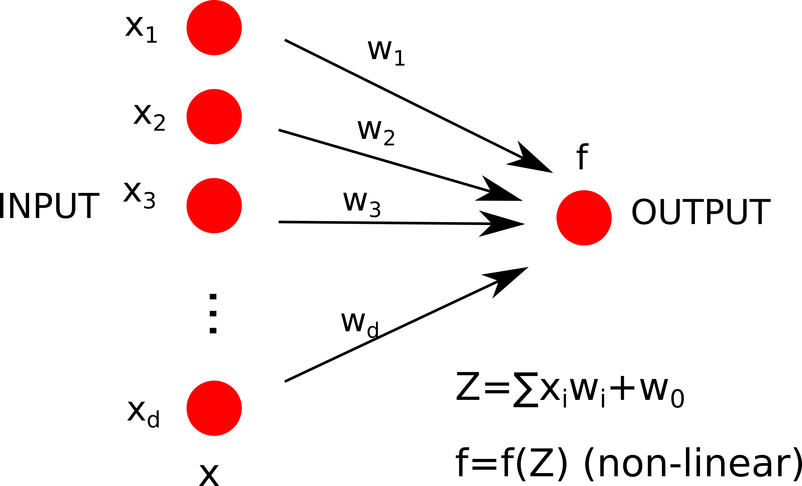
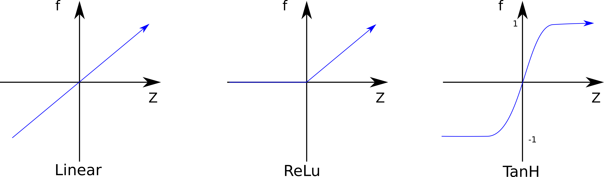
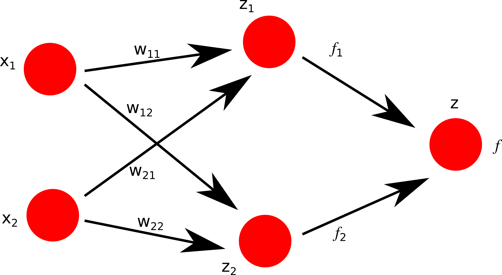
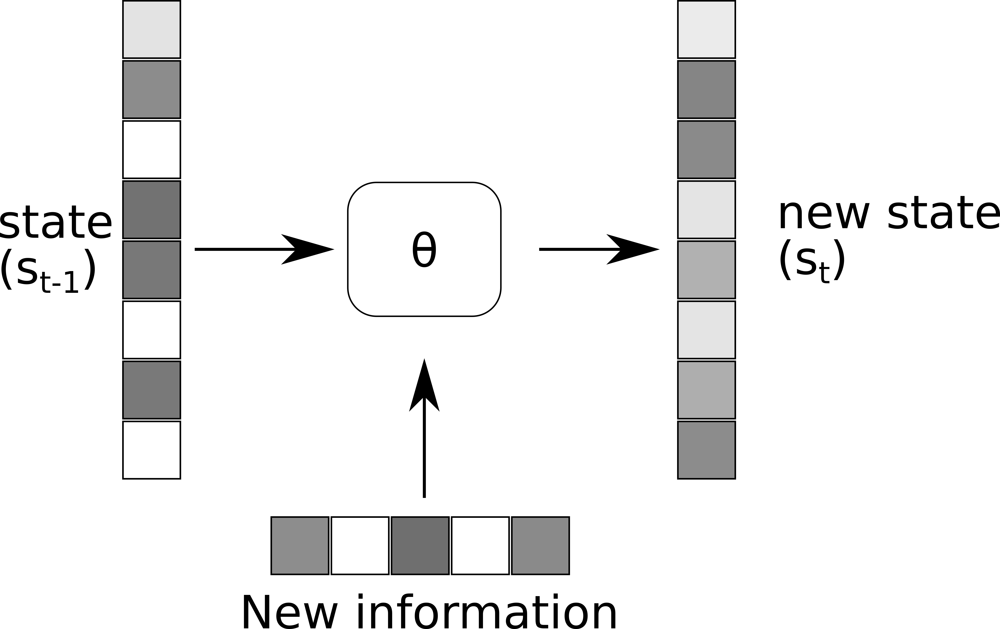
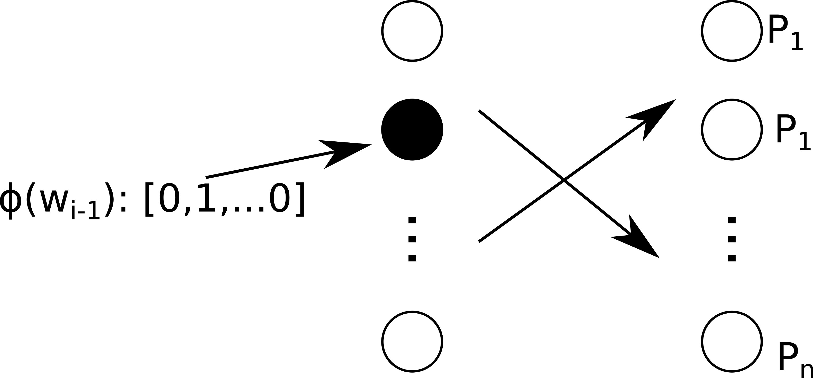
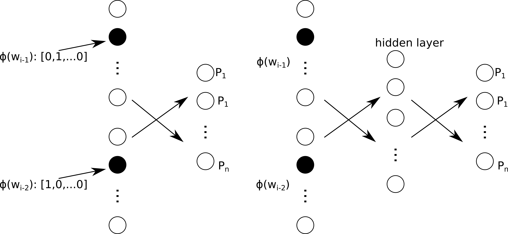

At the end of this unit, you will be able to
At the end of this lecture, you will be able to
Starting from the classifier we already studied, it relies on pre-compiled features ( or the feature map which we decide how it works using the kernel trick).
Now seeing the problem from a different perpective, we can introduce a node for each coordinate of the input vector (). Then is mapped in a feature representation (non linear) that it can have more dimensions than . We take a linear combination fo these features to get the of our function, each node will have a weight that corresponds to our (Figure).
A particular difference of this way to solve a non-linear classification problem, the input vector is mapped in a feature mapping that is fixed, is no longer tailored to the problem we are task we are trying to solve. The neural network tries to optimize the feature representation to the task I am trying to solve (it decide the features). So with deep neural network we are talking of feature representation learning, leraning to represent the examples in a way that is helpful for the classification task. This task is harder than the classification studied before. This is because in order to get a good classification, udenrstand and learn the weights we need to know what feature representation is. On the other hand, to understand what a good feature representation would be, we need to know how the feature representation is exercised in the classification task. So we need to adjust the feature representation together with how it is exercised toward the classification task.
Obv it doesn't look like a barin neural network, anyway we have our dendrites (input nodes), the weights that give the importance of each input node (coordinates of the input vector). So I take an aggragate weight of the inputs () with an offset parameter . NOTE our now is considered as the set of weights : The aggregate inout will be passed in a non-linear function called activation function that provides our output:
The function can be different, the simpliest is to keep it linear (it is used tipically at the very end before measuring the loss of the predictor). Another possibility is the ReLu (Rectified Linear Unit) that squashes all the negative values to 0, is definied as . The last considered mimics the sin function for the linear classifier ad maximize and minimize the output to the plateaus of 1 and -1 and is called hyperbolic tangent unit. TanH is particularly helpfull since we have to propragate the signall through the network to adjust all the parameters of the model.
Connected this neurons in highly parallel architectures. In feed forward NN these are organised in layers: the first layer, the input layer, is followed by one or more hidden feature transformation layers to the output layer. Each node takes inputs from all preceding units and it has it's own parameters to facilitate the computation. Each unit in the same layer has different parameters. Each layer has a width that corresponds to the number of units in that layer and the architecture has a depth that corresponds to the number of layers. In computer vision the first layer store the pixels, then the next layer could identify the edges and go on on the layers those information can be transformed we get the object and the caracterization we are trying to obtain with the model. DNN became tremendously famous. Why:
Considering a simple neural network with 2 input nodes, one hidden layer and one output layer, the computation aggregates the inputs with their weights:
So to compute :
Each unit can be observed as a linear classifier coupled with a non-linear function. Aggregating more nodes is possible to classify points that naturally they could not be linearly separable. Is important to understand that depending on the function, the result could or not could be linearly classificable. Also, increasing the number of nodes and so of decision boundaries, even if created randomly, they could provide a linearly classificalbe mapping.
Summary:
At the end of this lecture, you will be able to
We can imagine a neural network whit an output that is equally to:
Where is the input ans all the hidden layers parameters. So we can compute the gradient and learn the network, but how to compute the derivative?
Taking as example a deep network with a single node per layer. As input we have a scalara and as output a simple scalar . So, for the first hidden layer, we have and the activation function ... going to the last function (usually linear but kept tanh for simplicity). So to evaluate the performance we can calculate the , but we have to understand the output of the different layers. So, starting from the first layer we can devide the first derivative in the derivative of the first function with respect of the first weight and the derivative of the loss with respect of the first function:
Since, we can compute the second part considering since is a function of :
Conntinuing with the derivatives, we can reach our output and the back-propagate the radient up to th first layer:
By the nature we compute the derivatives by Jacobians If the gradients are small ,they can disapper if the architecture became big (deep?), and if the gradient are big, they can explode.
Considering a easy network (2 input, 2 nodes in 1 hidden layer and the final classifier) and some point in a 2d space. If the points are easily separable (the optimization of the 2 nodes is enough to separate them), the activations will find a hidden representation that devides linearly the points and the hinge loss can drop easily and we achieve the task of classify the points. Now increasing the number of nodes for the same representation (e.g. 10 nodes in 1 hidden layer) with random initialization (offet 0). After 10 iterations, many units will do something useful for the clasification task but other units will do nothing or not even do someting useful but the task will be achieved. With harder tasks we can increase the number of unita to have more complex decision boundaries, here we notice that increasing the number of units, some odd decision boundaries will appear (in the empty space) this is due to the fact we started all the units with 0 offset. So initializing the hidden unit with rendom offset we can solve it. So larger models are easier to train (give overcapacity) because we don't have to perfectly train all the units but we need only some fractin of them for our classification task. So in summary:
At the end of this lecture, you will be able to
Starting with a simple example, e.g. the value of a currency (e.g. USD/EUR) and to predict the price of the currency. With feed fowrawd NN we will compile a feature vector of previous values we can use these previous slieds to train the model and compare the history to previous values to predict what happens next.
Now taking as example descreete sequences (e.g. language modeling), how to predict the next word, we can translate the last 2 words in 2 one-hot encoding (only 1 1 the rest is 0) feature vectors. We can concatenate the 2 to get the long sparse vector to predict the nect word. We can go backward and do the same with the 3rd and 2nd to last words.
BUT
For different tasks we need to vectorise our entire sentence e.g.:
These vector will be different depending on the task. So we have to learn how to encode our data in a vector, and decode the vector in a prediction (or clasification) we want to make.
We can encode everything:
How to turn a sequence into a vector using a parametric transformation:
We start from a context or state (), it is updated with new information () and some parameters () to obtain the new state (). e.g.:

The matrices contain the parameter . Now let's apply the transformation box to a sentence to encode it to a vector:
Differencies from a feed-forward NN:
Learning RNN is similar to feed-fowrard NN with back-propragation. The issue of vanishing/exploding gradients still exsist. What can be inside the box: with the previous update, we forget the previous information and we should find a way to decide what to retain and what to update. To do os we can use a gating network:
NOTE: denotes element-wise multiplication
will be a vector wi the different weights to decide whether to keep or update some information:
When is 1 we retain the information, otherwise we opdate the information with our previous formula. Long-short term memory contain othe gates such as:
Other more complex model exist, LSTM is still widely used.
At the end of this lecture, you will be able to
To set a Markov model we have to refine the setup:
In a first order Markov model (bigram model) we consider only the previous simbol to predict the next one.
The Maximul Likelyhood () is provided by normalizing the count of pair () appear by the number of different pairs starting with word () found in the corpus of sentences:
So the probability of having the sentence:
<beg> course is UNK <end>
from this probability distribution is:
| ML | course | is | UNK | <end> | |
|---|---|---|---|---|---|
| <beg> | 0.7 | 0.1 | 0.1 | 0.1 | 0.0 |
| ML | 0.1 | 0.5 | 0.2 | 0.1 | 0.1 |
| course | 0.0 | 0.0 | 0.7 | 0.2 | 0.1 |
| is | 0.1 | 0.3 | 0.0 | 0.6 | 0.0 |
| UNK | 0.1 | 0.2 | 0.2 | 0.3 | 0.2 |
Starting with a one-hot vector representing the previous word, the input layer with nodes corresponding to the number of possible words. Since is one-hot, only one node will be activated, all the other will be 0. We need to map the feature in the probabilities in having the next word. We map the input nodes in the output unit with nodes of the size of possible output words so that the probability . To perform the calculation w have the parameter matrix so the aggregate input to the output unit (remember only one j is one, all the other are zero). Since the aggregate input are real number, the non-linear trasformation is that and . To do so we can use the softmax function exponeziating the input values and then normalize along the output unit:

Since the input nodes are fully connected with output nodes we dont loose anything compared to a first order markov model. Also, feed-forward NN are extendable compared to markov models, e.g. we can add a second one-hot vector for the word working in a space of a second order markov model.This network wouldn't caputre everything markov model can, but we can insert a hidden layer to look at more complex combination of the 2 words on how they map on the probabilities.
Now look at the order of parameters of a trigram markov model (2 words to predict the probability next one), so we have the combination of both the prceding word and for each of them we need the probability of the next word. so we have the number of words at the power of 3:
In a feed-forward neural network model that takes 2 preeceding words as input:
Adding a hidden layer the number of parameter will depend on the dimension of the hidden layer.
Previous model look at a fixed history to made predictions, we want the history to be fixable to made the model see and predict what comes next.
So we can set out one-hot vector with our preceeding word we will denote the vector as (), we map this to a hidden state of units, calling the vector of the activatio of hidden units is and the parameters of this mappin . The hidden state map in a output layer of nodes equal to the number of word (). This is just a feed-forward NN, now we made it recurrent, including as input with a parameter matrix to the hidden state to take it account of the previous time points. This model looks further in preceeding history because:
Now considering the previous encoder:
Ho to we generate a sentence from a vector?
Taking the trained model, instead of starting with the null vector, we can start from a vectro as starting vector, then all sequential trasformation and samplig will allow the the RNN to reconstruct the entire sequence. We can transform images to vector to generate images captions using a complicated RNN. So in summary
At the end of this lecture, you will be able to
In image recognition, (many high resolution images to categorize). If we consider high quality pictures having for example pixels (not that high), we have 1 milion pixels. If we apply a single hidden layer that may have units, the feed-forward NN is fully connected, resulting in a weight matrix will result in weights, one trillion! as single input of the first layer. That is the first problem.
The second problem with feed-forward NN, if we have our shape (e.g. mushroom) mainly centred in the training set, if we have a mushroom on a different area of the picture, since the weights there aren't trained to recognize it, the model wouldn't correctly classify the image.
Solution taking small patches from the image (e.g. pizels) connected to a unit, we will have the dimension of the weight vector will be so 121 weigths. If we apply that to the picture we can have the same number of weights to evaluate all the patches present in the image.
How that it works? Basically it take the patch, the weight matrix and get the dot product, then it pass throught an attivaction function and gives the output. To generate the layer one:
This approach will help us to find for example where the edges are in the image. The main differences from feed-forward NN are:
Looking at the feature mapping we can recognize that from a image, all the edges (shapes) of the picture are maintained.
Start separating what is in the image from where is in the image. Let's take again a small patch ( for example), From the values, take the max and assign to the first value of the pooled map. Then slide the window of 2 or more pixels. It will result in a smaller map where the edges (important spots) are saved independently from where they are.